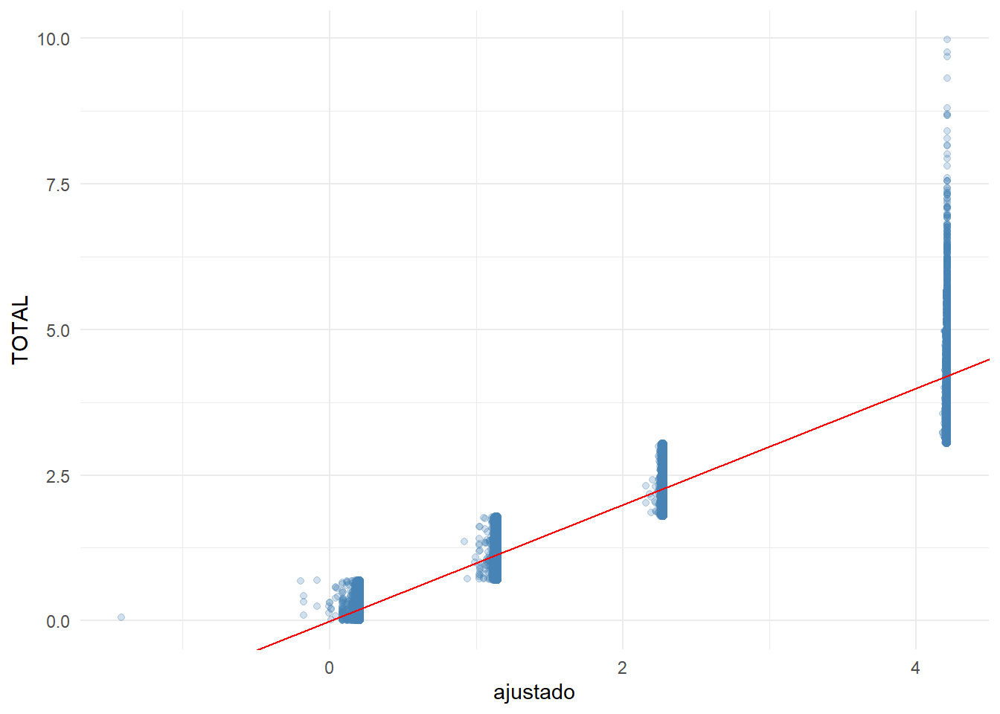
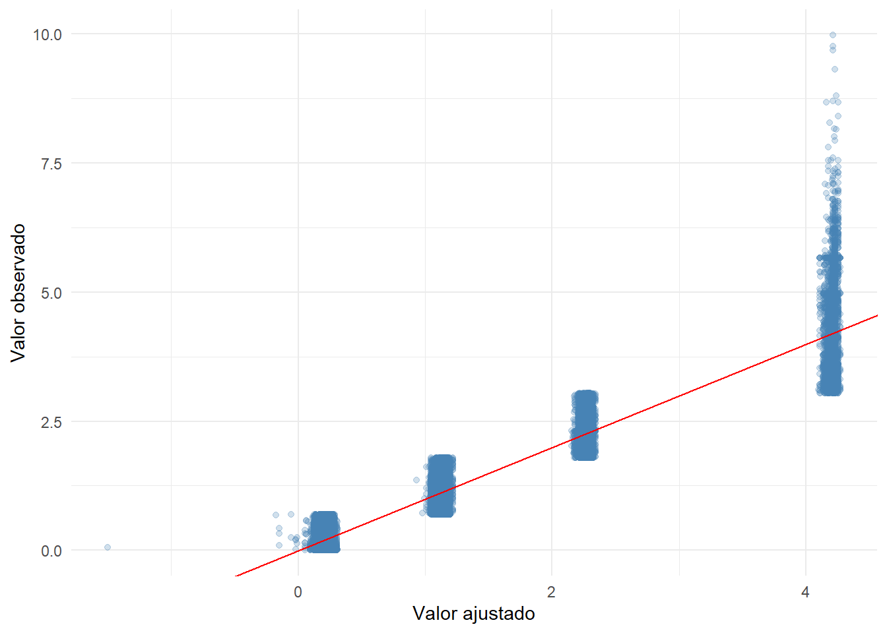
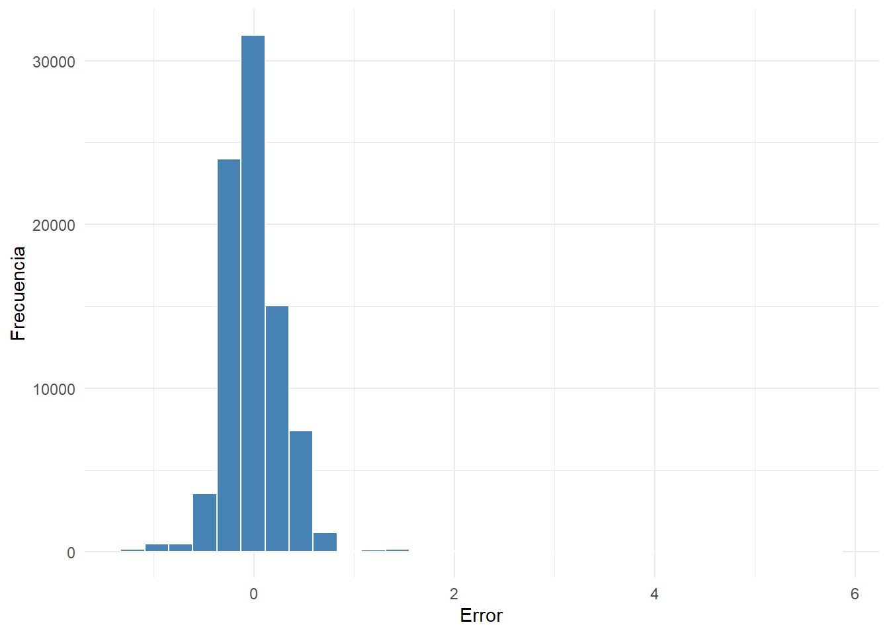

library(tidyverse)
library(ggplot2)
library(broom)
library(knitr)
library(here)24 Regresión lineal múltiple
Objetivos de aprendizaje
Al finalizar esta sección, el lector será capaz de:
- Comprender la diferencia entre regresión simple y múltiple.
- Identificar variables dependientes y explicativas.
- Estimar un modelo lineal múltiple en R.
- Interpretar coeficientes parciales.
- Comprender el concepto de control estadístico.
- Comparar la información aportada por distintas variables explicativas.
24.1 Introducción
En el capítulo anterior estudiamos la regresión lineal simple, donde una única variable explicativa era utilizada para modelar una variable de interés.
Sin embargo, en aplicaciones reales rara vez un fenómeno depende de una sola variable. La productividad agrícola, los ingresos de los hogares, el rendimiento académico o el crecimiento económico suelen estar influenciados simultáneamente por múltiples factores.
La regresión lineal múltiple permite incorporar varias variables explicativas dentro de una misma ecuación, proporcionando una representación más realista de los procesos observados (Montgomery et al., 2021).
24.2 Cargando librerías
24.3 Cargando la base analítica
base_analitica <- readRDS(
here(
"datos",
"procesado",
"ESPAC_2025",
"sunac_transformado.rds"
)
)24.4 Preparación de variables
Para ilustrar la regresión múltiple construiremos una base con variables numéricas y categóricas.
base_modelo <- base_analitica |>
mutate(
log_supertotal =
log1p(
supertotal
)
) |>
select(
log_supertotal,
fact_exp_fin,
tamano_upa,
provincia
) |>
drop_na()24.5 Estructura de la base
glimpse(
base_modelo
)Rows: 84,538
Columns: 4
$ log_supertotal <dbl> 1.324844399, 0.564233680, 1.823597226, 0.251692135, 1.2…
$ fact_exp_fin <dbl> 66.37009, 66.37009, 66.37009, 66.37009, 66.37009, 66.37…
$ tamano_upa <chr> "Pequeña", "Micro", "Mediana", "Micro", "Pequeña", "Mic…
$ provincia <fct> AZUAY, AZUAY, AZUAY, AZUAY, AZUAY, AZUAY, AZUAY,…Interpretación
La variable dependiente será log_supertotal, mientras que fact_exp_fin, tamano_upa y posteriormente otras variables actuarán como explicativas.
24.6 Del modelo simple al modelo múltiple
La regresión lineal simple se expresa como:
\[Y_i = \beta_0 + \beta_1 X_i + \varepsilon_i\]
La regresión múltiple amplía esta estructura:
\[Y_i = \beta_0 + \beta_1 X_{1i} + \beta_2 X_{2i} + \cdots + \beta_k X_{ki} + \varepsilon_i\]
Ahora cada coeficiente mide el efecto parcial de una variable manteniendo constantes las demás.
24.7 ¿Qué significa controlar variables?
Uno de los principales aportes de la regresión múltiple consiste en controlar estadísticamente otros factores.
Conceptualmente:
Superficie agrícola
↓
puede depender de
Factor de expansión
Tamaño de UPA
Provincia
Otros factoresAl incluir varias variables en el modelo podemos aislar mejor la contribución individual de cada una.
24.8 Modelo simple de referencia
Antes de construir el modelo múltiple estimaremos nuevamente un modelo simple.
modelo_simple <- lm(
log_supertotal ~ fact_exp_fin,
data = base_modelo
)broom::glance(
modelo_simple
) |>
select(
r.squared,
adj.r.squared,
sigma
) |>
kable(
digits = 4,
caption = "Resumen del modelo simple"
)| r.squared | adj.r.squared | sigma |
|---|---|---|
| 0.0211 | 0.0211 | 0.9651 |
Interpretación
Este modelo servirá como punto de comparación para evaluar cuánto mejora el ajuste cuando incorporamos variables adicionales.
24.9 Construcción del primer modelo múltiple
Ahora incorporaremos el tamaño de la unidad productiva.
modelo_multiple_1 <- lm(
log_supertotal ~
fact_exp_fin +
tamano_upa,
data = base_modelo
)24.10 Resultados del modelo múltiple
broom::tidy(
modelo_multiple_1
) |>
kable(
digits = 4,
caption = "Coeficientes del modelo múltiple"
)| term | estimate | std.error | statistic | p.value |
|---|---|---|---|---|
| (Intercept) | 4.2139 | 0.0055 | 772.6931 | 0 |
| fact_exp_fin | -0.0002 | 0.0000 | -8.4629 | 0 |
| tamano_upaMediana | -1.9355 | 0.0066 | -294.8109 | 0 |
| tamano_upaMicro | -4.0031 | 0.0056 | -711.2700 | 0 |
| tamano_upaPequeña | -3.0671 | 0.0059 | -518.4462 | 0 |
Interpretación
Cada coeficiente representa el cambio esperado en log_supertotal asociado a una variación de la variable correspondiente, manteniendo constantes las demás variables incluidas en el modelo. De igual forma, el primer paso es observar el valor p para comprobar su significancia estadística y proceder a interpretar los resultados.
24.11 Comparación entre modelos
tibble(
Modelo = c(
"Simple",
"Múltiple"
),
R2 = c(
summary(modelo_simple)$r.squared,
summary(modelo_multiple_1)$r.squared
),
R2_Ajustado = c(
summary(modelo_simple)$adj.r.squared,
summary(modelo_multiple_1)$adj.r.squared
)
) |>
kable(
digits = 4,
caption = "Comparación entre modelo simple y múltiple"
)| Modelo | R2 | R2_Ajustado |
|---|---|---|
| Simple | 0.0211 | 0.0211 |
| Múltiple | 0.9037 | 0.9037 |
Interpretación
La comparación permite evaluar si la incorporación de nuevas variables mejora la capacidad explicativa del modelo.
24.12 Interpretación de coeficientes parciales
En regresión múltiple ya no interpretamos los coeficientes de forma aislada.
La interpretación correcta es:
Efecto de Xi
manteniendo constantes
las demás variables del modeloEsta idea constituye la principal diferencia respecto a la regresión simple.
24.13 Visualización de valores ajustados
base_modelo |>
mutate(
ajustado =
predict(
modelo_multiple_1
)
) |>
ggplot(
aes(
x = ajustado,
y = log_supertotal
)
) +
geom_point(
alpha = 0.25,
color = "steelblue"
) +
geom_abline(
slope = 1,
intercept = 0,
color = "red"
) +
theme_minimal()
Interpretación
La proximidad de los puntos a la diagonal proporciona una evaluación visual preliminar de la capacidad predictiva del modelo.
24.14 Conclusión práctica
La regresión lineal múltiple amplía la lógica del modelo simple permitiendo incorporar varios factores explicativos simultáneamente.
En esta primera parte aprendimos a:
- Diferenciar regresión simple y múltiple.
- Comprender el concepto de control estadístico.
- Estimar un modelo con varias variables explicativas.
- Interpretar coeficientes parciales.
- Comparar modelos mediante R².
En la siguiente sección profundizaremos en la comparación de modelos, la incorporación de variables categóricas y la evaluación del aporte de cada predictor.
24.15 Introducción
Una vez estimado un modelo de regresión múltiple surge una pregunta natural:
¿Qué variables aportan realmente información al modelo?La regresión múltiple permite comparar especificaciones alternativas e identificar qué variables contribuyen a mejorar la explicación de la variable dependiente.
En esta sección estudiaremos cómo comparar modelos, interpretar el aporte de nuevos predictores y comprender el papel de las variables de control.
24.16 Cargando librerías
library(tidyverse)
library(ggplot2)
library(broom)
library(knitr)
library(here)24.17 Cargando la base analítica
base_analitica <- readRDS(
here(
"datos",
"procesado",
"ESPAC_2025",
"sunac_transformado.rds"
)
)24.18 Preparación de variables
base_modelo <- base_analitica |>
mutate(
log_supertotal =
log1p(
supertotal
)
) |>
select(
log_supertotal,
fact_exp_fin,
tamano_upa,
provincia
) |>
drop_na()24.19 Modelo de referencia
Comenzaremos con el modelo estimado en la sección anterior.
modelo_1 <- lm(
log_supertotal ~
fact_exp_fin +
tamano_upa,
data = base_modelo
)24.20 Resumen del modelo base
glance(
modelo_1
) |>
select(
r.squared,
adj.r.squared,
sigma,
AIC,
BIC
) |>
kable(
digits = 4,
caption = "Indicadores del modelo base"
)| r.squared | adj.r.squared | sigma | AIC | BIC |
|---|---|---|---|---|
| 0.9037 | 0.9037 | 0.3027 | 37845.4 | 37901.47 |
Interpretación
Estos indicadores resumen la calidad general del ajuste y servirán como punto de comparación para modelos más complejos.
24.21 Incorporando una variable adicional
Ahora agregaremos la variable provincia.
modelo_2 <- lm(
log_supertotal ~
fact_exp_fin +
tamano_upa +
provincia,
data = base_modelo
)24.22 Coeficientes del nuevo modelo
tidy(
modelo_2
) |>
kable(
digits = 4,
caption = "Coeficientes del modelo ampliado"
)| term | estimate | std.error | statistic | p.value |
|---|---|---|---|---|
| (Intercept) | 4.1530 | 0.0066 | 625.5597 | 0.0000 |
| fact_exp_fin | -0.0002 | 0.0000 | -9.0952 | 0.0000 |
| tamano_upaMediana | -1.9287 | 0.0065 | -295.1736 | 0.0000 |
| tamano_upaMicro | -3.9660 | 0.0057 | -694.3250 | 0.0000 |
| tamano_upaPequeña | -3.0546 | 0.0059 | -517.0865 | 0.0000 |
| provinciaBOLÍVAR | 0.0308 | 0.0063 | 4.9125 | 0.0000 |
| provinciaCAÑAR | 0.0066 | 0.0071 | 0.9263 | 0.3543 |
| provinciaCARCHI | 0.0476 | 0.0077 | 6.2043 | 0.0000 |
| provinciaCOTOPAXI | -0.0091 | 0.0049 | -1.8849 | 0.0594 |
| provinciaCHIMBORAZO | 0.0082 | 0.0051 | 1.6262 | 0.1039 |
| provinciaEL ORO | 0.0464 | 0.0073 | 6.3314 | 0.0000 |
| provinciaESMERALDAS | 0.1021 | 0.0061 | 16.6203 | 0.0000 |
| provinciaGUAYAS | 0.0632 | 0.0057 | 11.0860 | 0.0000 |
| provinciaIMBABURA | 0.0354 | 0.0064 | 5.5065 | 0.0000 |
| provinciaLOJA | 0.0252 | 0.0062 | 4.0461 | 0.0001 |
| provinciaLOS RÍOS | 0.0752 | 0.0059 | 12.7302 | 0.0000 |
| provinciaMANABÍ | 0.0752 | 0.0048 | 15.5813 | 0.0000 |
| provinciaMORONA SANTIAGO | 0.0608 | 0.0077 | 7.8490 | 0.0000 |
| provinciaNAPO | 0.0428 | 0.0089 | 4.7990 | 0.0000 |
| provinciaPASTAZA | 0.0836 | 0.0098 | 8.5072 | 0.0000 |
| provinciaPICHINCHA | 0.0268 | 0.0057 | 4.6678 | 0.0000 |
| provinciaTUNGURAHUA | -0.0399 | 0.0052 | -7.6931 | 0.0000 |
| provinciaZAMORA CHINCHIPE | 0.0402 | 0.0115 | 3.5080 | 0.0005 |
| provinciaSUCUMBÍOS | 0.0885 | 0.0073 | 12.1507 | 0.0000 |
| provinciaORELLANA | 0.0733 | 0.0091 | 8.0317 | 0.0000 |
| provinciaSANTO DOMINGO DE LOS TSÁCHILAS | 0.0544 | 0.0074 | 7.3937 | 0.0000 |
| provinciaSANTA ELENA | 0.0630 | 0.0146 | 4.3092 | 0.0000 |
| provinciaZONA NO DELIMITADA | 0.1204 | 0.0223 | 5.4023 | 0.0000 |
Interpretación
Al incorporar provincia, los coeficientes previamente estimados pueden modificarse. Esto ocurre porque parte de la variabilidad explicada anteriormente puede estar asociada a diferencias territoriales. En este caso, puede deducirse que algunas variables no son estadísticamente significativas cuando su valor p es mayor que 0,05 y, por lo tanto, su estadístico t en valor absoluto es inferior al valor crítico aproximado de 2; esto indica que dichas variables no aportan evidencia suficiente dentro del modelo especificado.
24.23 Comparación entre modelos
tibble(
Modelo = c(
"Modelo 1",
"Modelo 2"
),
R2 = c(
summary(modelo_1)$r.squared,
summary(modelo_2)$r.squared
),
R2_Ajustado = c(
summary(modelo_1)$adj.r.squared,
summary(modelo_2)$adj.r.squared
),
AIC = c(
AIC(modelo_1),
AIC(modelo_2)
)
) |>
kable(
digits = 4,
caption = "Comparación entre especificaciones"
)| Modelo | R2 | R2_Ajustado | AIC |
|---|---|---|---|
| Modelo 1 | 0.9037 | 0.9037 | 37845.40 |
| Modelo 2 | 0.9052 | 0.9051 | 36635.86 |
Interpretación
La comparación permite evaluar si la nueva variable aporta información adicional relevante al modelo.
24.24 ¿Qué es una variable de control?
Una variable de control es una variable incorporada al modelo para aislar mejor la relación entre la variable dependiente y el predictor principal.
Por ejemplo:
log_supertotal
↓
fact_exp_finpuede verse afectado por:
tamano_upa
provinciaAl incorporarlas al modelo reducimos posibles sesgos de omisión.
24.25 Efectos parciales
En regresión múltiple cada coeficiente se interpreta manteniendo constantes las demás variables.
Por ejemplo:
β1representa el efecto de:
fact_exp_finmanteniendo constantes:
tamano_upa
provinciaEsta es una de las principales fortalezas del modelo múltiple.
24.26 Comparando coeficientes
coef_modelo1 <- tidy(
modelo_1
)
coef_modelo2 <- tidy(
modelo_2
)
coef_modelo1 |>
select(
term,
estimate
) |>
rename(
Coef_Modelo1 = estimate
) |>
left_join(
coef_modelo2 |>
select(
term,
estimate
) |>
rename(
Coef_Modelo2 = estimate
),
by = "term"
) |>
kable(
digits = 4,
caption = "Comparación de coeficientes"
)| term | Coef_Modelo1 | Coef_Modelo2 |
|---|---|---|
| (Intercept) | 4.2139 | 4.1530 |
| fact_exp_fin | -0.0002 | -0.0002 |
| tamano_upaMediana | -1.9355 | -1.9287 |
| tamano_upaMicro | -4.0031 | -3.9660 |
| tamano_upaPequeña | -3.0671 | -3.0546 |
Interpretación
Cambios importantes en los coeficientes sugieren que las variables adicionales aportan información relevante.
24.27 Importancia del R² ajustado
Al incorporar nuevas variables, el R² tradicional casi siempre aumenta.
Por esta razón suele prestarse mayor atención al R² ajustado.
tibble(
Modelo = c(
"Modelo 1",
"Modelo 2"
),
R2_Ajustado = c(
summary(modelo_1)$adj.r.squared,
summary(modelo_2)$adj.r.squared
)
) |>
kable(
digits = 4,
caption = "Comparación del R² ajustado"
)| Modelo | R2_Ajustado |
|---|---|
| Modelo 1 | 0.9037 |
| Modelo 2 | 0.9051 |
Interpretación
El R² ajustado penaliza la incorporación de variables que no aportan información suficiente.
24.28 Visualización del ajuste
base_modelo |>
mutate(
ajustado =
predict(
modelo_2
)
) |>
ggplot(
aes(
x = ajustado,
y = log_supertotal
)
) +
geom_point(
alpha = 0.25,
color = "steelblue"
) +
geom_abline(
slope = 1,
intercept = 0,
color = "red"
) +
theme_minimal() +
labs(
x = "Valor ajustado",
y = "Valor observado"
)
Interpretación
La gráfica permite evaluar visualmente la calidad de las predicciones generadas por el modelo.
24.29 Comparación mediante ANOVA
Cuando un modelo contiene todas las variables de otro más algunas adicionales, pueden compararse formalmente.
anova(
modelo_1,
modelo_2
) |>
kable(
digits = 4,
caption = "Comparación ANOVA entre modelos anidados"
)| Res.Df | RSS | Df | Sum of Sq | F | Pr(>F) |
|---|---|---|---|---|---|
| 84533 | 7743.512 | NA | NA | NA | NA |
| 84510 | 7629.357 | 23 | 114.1553 | 54.9779 | 0 |
Interpretación
Esta prueba evalúa si la incorporación de nuevas variables mejora significativamente el ajuste.
24.30 Selección de variables
En la práctica, la selección de variables debe apoyarse en:
- Teoría.
- Evidencia previa.
- Objetivos del estudio.
- Calidad de los datos.
No se recomienda seleccionar variables únicamente porque producen un R² más elevado.
24.31 Resumen comparativo
tibble(
Aspecto = c(
"Número de variables",
"R²",
"R² ajustado",
"Complejidad",
"Interpretación"
),
Modelo_1 = c(
"2",
round(summary(modelo_1)$r.squared, 4),
round(summary(modelo_1)$adj.r.squared, 4),
"Menor",
"Más sencilla"
),
Modelo_2 = c(
"3+",
round(summary(modelo_2)$r.squared, 4),
round(summary(modelo_2)$adj.r.squared, 4),
"Mayor",
"Más completa"
)
) |>
kable(
caption = "Resumen comparativo de modelos"
)| Aspecto | Modelo_1 | Modelo_2 |
|---|---|---|
| Número de variables | 2 | 3+ |
| R² | 0.9037 | 0.9052 |
| R² ajustado | 0.9037 | 0.9051 |
| Complejidad | Menor | Mayor |
| Interpretación | Más sencilla | Más completa |
Interpretación
El investigador debe equilibrar capacidad explicativa y simplicidad interpretativa.
24.32 Conclusión práctica
En esta sección aprendimos a:
- Comparar modelos de regresión múltiple.
- Interpretar variables de control.
- Analizar cambios en coeficientes.
- Utilizar R² ajustado.
- Comparar modelos anidados mediante ANOVA.
- Evaluar el aporte de nuevas variables explicativas.
En la siguiente sección construiremos un flujo completo de predicción utilizando múltiples variables y sintetizaremos el proceso completo de regresión lineal múltiple.
24.33 Introducción
Hasta este punto hemos aprendido a estimar modelos de regresión múltiple e incorporar variables de control. El paso final consiste en utilizar el modelo para generar predicciones e interpretar conjuntamente los resultados obtenidos.
En esta sección construiremos un flujo completo de análisis que servirá como referencia para futuras aplicaciones de regresión múltiple.
24.34 Cargando librerías
library(tidyverse)
library(ggplot2)
library(broom)
library(knitr)
library(here)24.35 Cargando la base analítica
base_analitica <- readRDS(
here(
"datos",
"procesado",
"ESPAC_2025",
"sunac_transformado.rds"
)
)24.36 Preparación de variables
base_modelo <- base_analitica |>
mutate(
log_supertotal =
log1p(
supertotal
),
tamano_upa =
as.factor(
tamano_upa
),
provincia =
as.factor(
provincia
)
) |>
select(
log_supertotal,
fact_exp_fin,
tamano_upa,
provincia
) |>
drop_na()24.37 Modelo final
modelo_final <- lm(
log_supertotal ~
fact_exp_fin +
tamano_upa +
provincia,
data = base_modelo
)24.38 Resumen general del modelo
glance(
modelo_final
) |>
select(
r.squared,
adj.r.squared,
sigma,
statistic,
p.value
) |>
kable(
digits = 4,
caption = "Resumen general del modelo final"
)| r.squared | adj.r.squared | sigma | statistic | p.value |
|---|---|---|---|---|
| 0.9052 | 0.9051 | 0.3005 | 29870.89 | 0 |
Interpretación
Esta tabla resume la capacidad explicativa del modelo, el error residual y la significancia global de la regresión.
24.39 Tabla completa de coeficientes
tidy(
modelo_final,
conf.int = TRUE
) |>
kable(
digits = 4,
caption = "Coeficientes estimados del modelo final"
)| term | estimate | std.error | statistic | p.value | conf.low | conf.high |
|---|---|---|---|---|---|---|
| (Intercept) | 4.1530 | 0.0066 | 625.5597 | 0.0000 | 4.1400 | 4.1660 |
| fact_exp_fin | -0.0002 | 0.0000 | -9.0952 | 0.0000 | -0.0002 | -0.0001 |
| tamano_upaMediana | -1.9287 | 0.0065 | -295.1736 | 0.0000 | -1.9415 | -1.9159 |
| tamano_upaMicro | -3.9660 | 0.0057 | -694.3250 | 0.0000 | -3.9772 | -3.9548 |
| tamano_upaPequeña | -3.0546 | 0.0059 | -517.0865 | 0.0000 | -3.0662 | -3.0430 |
| provinciaBOLÍVAR | 0.0308 | 0.0063 | 4.9125 | 0.0000 | 0.0185 | 0.0431 |
| provinciaCAÑAR | 0.0066 | 0.0071 | 0.9263 | 0.3543 | -0.0074 | 0.0206 |
| provinciaCARCHI | 0.0476 | 0.0077 | 6.2043 | 0.0000 | 0.0325 | 0.0626 |
| provinciaCOTOPAXI | -0.0091 | 0.0049 | -1.8849 | 0.0594 | -0.0187 | 0.0004 |
| provinciaCHIMBORAZO | 0.0082 | 0.0051 | 1.6262 | 0.1039 | -0.0017 | 0.0182 |
| provinciaEL ORO | 0.0464 | 0.0073 | 6.3314 | 0.0000 | 0.0321 | 0.0608 |
| provinciaESMERALDAS | 0.1021 | 0.0061 | 16.6203 | 0.0000 | 0.0900 | 0.1141 |
| provinciaGUAYAS | 0.0632 | 0.0057 | 11.0860 | 0.0000 | 0.0520 | 0.0744 |
| provinciaIMBABURA | 0.0354 | 0.0064 | 5.5065 | 0.0000 | 0.0228 | 0.0480 |
| provinciaLOJA | 0.0252 | 0.0062 | 4.0461 | 0.0001 | 0.0130 | 0.0373 |
| provinciaLOS RÍOS | 0.0752 | 0.0059 | 12.7302 | 0.0000 | 0.0636 | 0.0868 |
| provinciaMANABÍ | 0.0752 | 0.0048 | 15.5813 | 0.0000 | 0.0657 | 0.0846 |
| provinciaMORONA SANTIAGO | 0.0608 | 0.0077 | 7.8490 | 0.0000 | 0.0456 | 0.0760 |
| provinciaNAPO | 0.0428 | 0.0089 | 4.7990 | 0.0000 | 0.0253 | 0.0603 |
| provinciaPASTAZA | 0.0836 | 0.0098 | 8.5072 | 0.0000 | 0.0644 | 0.1029 |
| provinciaPICHINCHA | 0.0268 | 0.0057 | 4.6678 | 0.0000 | 0.0156 | 0.0381 |
| provinciaTUNGURAHUA | -0.0399 | 0.0052 | -7.6931 | 0.0000 | -0.0500 | -0.0297 |
| provinciaZAMORA CHINCHIPE | 0.0402 | 0.0115 | 3.5080 | 0.0005 | 0.0177 | 0.0627 |
| provinciaSUCUMBÍOS | 0.0885 | 0.0073 | 12.1507 | 0.0000 | 0.0742 | 0.1028 |
| provinciaORELLANA | 0.0733 | 0.0091 | 8.0317 | 0.0000 | 0.0554 | 0.0911 |
| provinciaSANTO DOMINGO DE LOS TSÁCHILAS | 0.0544 | 0.0074 | 7.3937 | 0.0000 | 0.0400 | 0.0689 |
| provinciaSANTA ELENA | 0.0630 | 0.0146 | 4.3092 | 0.0000 | 0.0344 | 0.0917 |
| provinciaZONA NO DELIMITADA | 0.1204 | 0.0223 | 5.4023 | 0.0000 | 0.0767 | 0.1640 |
Interpretación
Cada coeficiente representa el efecto parcial de la variable correspondiente manteniendo constantes las demás variables del modelo. No debe olvidarse evaluar su significancia estadística.
24.40 Generación de valores ajustados
base_modelo <- base_modelo |>
mutate(
ajustado =
predict(
modelo_final
)
)24.41 Comparación entre valores observados y ajustados
ggplot(
base_modelo,
aes(
x = ajustado,
y = log_supertotal
)
) +
geom_point(
alpha = 0.25,
color = "steelblue"
) +
geom_abline(
intercept = 0,
slope = 1,
color = "red"
) +
theme_minimal() +
labs(
x = "Valor ajustado",
y = "Valor observado"
)
Interpretación
La cercanía de los puntos a la diagonal indica la capacidad del modelo para reproducir los valores observados.
24.42 Error de predicción
Una forma sencilla de evaluar el desempeño consiste en calcular la diferencia entre valores observados y ajustados.
base_modelo <- base_modelo |>
mutate(
error =
log_supertotal -
ajustado
)24.43 Resumen de errores
tibble(
Estadistico = c(
"Mínimo",
"Primer cuartil",
"Mediana",
"Media",
"Tercer cuartil",
"Máximo"
),
Valor = as.numeric(
summary(
base_modelo$error
)
)
) |>
kable(
digits = 4,
caption = "Resumen de errores de predicción"
)| Estadistico | Valor |
|---|---|
| Mínimo | -1.2104 |
| Primer cuartil | -0.1632 |
| Mediana | -0.0571 |
| Media | 0.0000 |
| Tercer cuartil | 0.1527 |
| Máximo | 5.7584 |
Interpretación
Errores centrados alrededor de cero indican ausencia de sesgos sistemáticos importantes.
24.44 Distribución de errores
ggplot(
base_modelo,
aes(
x = error
)
) +
geom_histogram(
bins = 30,
fill = "steelblue",
color = "white"
) +
theme_minimal() +
labs(
x = "Error",
y = "Frecuencia"
)
Interpretación
La distribución de errores permite evaluar si existen desviaciones sistemáticas importantes entre observaciones y predicciones.
24.45 Predicciones para nuevos casos
La regresión múltiple permite generar predicciones para escenarios específicos.
nuevos_casos <- tibble(
fact_exp_fin = c(
median(
base_modelo$fact_exp_fin,
na.rm = TRUE
),
quantile(
base_modelo$fact_exp_fin,
0.75,
na.rm = TRUE
)
),
tamano_upa = factor(
c(
levels(
factor(
base_modelo$tamano_upa
)
)[1],
levels(
factor(
base_modelo$tamano_upa
)
)[2]
),
levels =
levels(
factor(
base_modelo$tamano_upa
)
)
),
provincia = factor(
c(
levels(
factor(
base_modelo$provincia
)
)[1],
levels(
factor(
base_modelo$provincia
)
)[1]
),
levels =
levels(
factor(
base_modelo$provincia
)
)
)
)
nuevos_casos |>
kable(
digits = 2,
caption = "Casos utilizados para predicción"
)| fact_exp_fin | tamano_upa | provincia |
|---|---|---|
| 65.8 | Grande | AZUAY |
| 67.7 | Mediana | AZUAY |
24.46 Predicciones puntuales
nuevos_casos |>
mutate(
prediccion =
predict(
modelo_final,
newdata = nuevos_casos
)
) |>
kable(
digits = 3,
caption = "Predicciones del modelo"
)| fact_exp_fin | tamano_upa | provincia | prediccion |
|---|---|---|---|
| 65.802 | Grande | AZUAY | 4.142 |
| 67.696 | Mediana | AZUAY | 2.213 |
Interpretación
Las predicciones representan el valor esperado de la superficie transformada para los escenarios definidos.
24.47 Intervalos de confianza
predict(
modelo_final,
newdata = nuevos_casos,
interval = "confidence"
) |>
as.data.frame() |>
kable(
digits = 3,
caption = "Intervalos de confianza para las predicciones"
)| fit | lwr | upr |
|---|---|---|
| 4.142 | 4.129 | 4.155 |
| 2.213 | 2.203 | 2.223 |
Interpretación
Los intervalos reflejan la incertidumbre asociada a la estimación de la media esperada.
24.48 Variables más influyentes
Aunque la magnitud de los coeficientes no siempre es directamente comparable, podemos examinar su importancia relativa de manera descriptiva.
tidy(
modelo_final
) |>
filter(
term != "(Intercept)"
) |>
mutate(
magnitud =
abs(
estimate
)
) |>
arrange(
desc(
magnitud
)
) |>
select(
Variable = term,
Coeficiente = estimate,
Magnitud = magnitud
) |>
kable(
digits = 4,
caption = "Magnitud relativa de coeficientes"
)| Variable | Coeficiente | Magnitud |
|---|---|---|
| tamano_upaMicro | -3.9660 | 3.9660 |
| tamano_upaPequeña | -3.0546 | 3.0546 |
| tamano_upaMediana | -1.9287 | 1.9287 |
| provinciaZONA NO DELIMITADA | 0.1204 | 0.1204 |
| provinciaESMERALDAS | 0.1021 | 0.1021 |
| provinciaSUCUMBÍOS | 0.0885 | 0.0885 |
| provinciaPASTAZA | 0.0836 | 0.0836 |
| provinciaLOS RÍOS | 0.0752 | 0.0752 |
| provinciaMANABÍ | 0.0752 | 0.0752 |
| provinciaORELLANA | 0.0733 | 0.0733 |
| provinciaGUAYAS | 0.0632 | 0.0632 |
| provinciaSANTA ELENA | 0.0630 | 0.0630 |
| provinciaMORONA SANTIAGO | 0.0608 | 0.0608 |
| provinciaSANTO DOMINGO DE LOS TSÁCHILAS | 0.0544 | 0.0544 |
| provinciaCARCHI | 0.0476 | 0.0476 |
| provinciaEL ORO | 0.0464 | 0.0464 |
| provinciaNAPO | 0.0428 | 0.0428 |
| provinciaZAMORA CHINCHIPE | 0.0402 | 0.0402 |
| provinciaTUNGURAHUA | -0.0399 | 0.0399 |
| provinciaIMBABURA | 0.0354 | 0.0354 |
| provinciaBOLÍVAR | 0.0308 | 0.0308 |
| provinciaPICHINCHA | 0.0268 | 0.0268 |
| provinciaLOJA | 0.0252 | 0.0252 |
| provinciaCOTOPAXI | -0.0091 | 0.0091 |
| provinciaCHIMBORAZO | 0.0082 | 0.0082 |
| provinciaCAÑAR | 0.0066 | 0.0066 |
| fact_exp_fin | -0.0002 | 0.0002 |
Interpretación
Esta comparación es únicamente descriptiva y no debe interpretarse como una medida definitiva de importancia estadística.
24.49 Flujo general de una regresión múltiple
tibble(
Etapa = c(
"Definir variables",
"Estimar modelo",
"Interpretar coeficientes",
"Evaluar ajuste",
"Generar predicciones",
"Validar supuestos"
)
) |>
kable(
caption = "Flujo general de una regresión múltiple"
)| Etapa |
|---|
| Definir variables |
| Estimar modelo |
| Interpretar coeficientes |
| Evaluar ajuste |
| Generar predicciones |
| Validar supuestos |
Interpretación
Estas etapas resumen el procedimiento seguido en los capítulos 20 y 21.
24.50 Aplicación práctica
La regresión múltiple permite responder preguntas como:
- ¿Qué variables explican mejor una determinada respuesta?
- ¿Cómo cambia la variable dependiente cuando una variable aumenta y las demás permanecen constantes?
- ¿Cuál es el valor esperado bajo distintos escenarios?
Estas preguntas aparecen frecuentemente en investigación aplicada, planificación y análisis de políticas públicas.
24.51 Manos a la obra
- Estime un modelo múltiple con al menos tres variables explicativas.
- Interprete todos los coeficientes.
- Compare el modelo con una especificación más simple.
- Analice el R² y el R² ajustado.
- Genere valores ajustados.
- Calcule errores de predicción.
- Construya gráficos observado versus ajustado.
- Obtenga predicciones para nuevos casos.
- Calcule intervalos de confianza.
- Redacte una conclusión aplicada utilizando los resultados obtenidos.
24.52 Resumen del capítulo
En este capítulo ampliamos la lógica de la regresión lineal simple incorporando múltiples variables explicativas dentro de una misma ecuación.
Aprendimos a interpretar coeficientes parciales, utilizar variables de control, comparar especificaciones alternativas, evaluar la mejora del ajuste y generar predicciones para nuevos escenarios.
La regresión múltiple constituye una de las herramientas más utilizadas en investigación cuantitativa porque permite aproximarse de forma más realista a fenómenos complejos donde intervienen múltiples factores simultáneamente.
En el siguiente capítulo estudiaremos el diagnóstico del modelo, etapa fundamental para evaluar si los supuestos de la regresión lineal se cumplen adecuadamente.